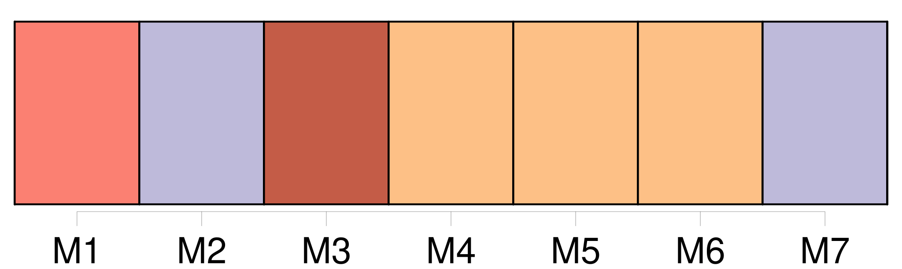

Longueur nb maillons : 9 mentions |
 |
[Un artiste bisontin fana d'aviation] a travaillé bénévolement à l'édification d'une sculpture métallique pour rendre hommage au pilote d'hélicoptère qui a trouvé la mort le 22 octobre 2001 à Soulce-Cernay. [André Pargenin] , connu pour [ses] réalisations animalières, avait croisé plusieurs fois Dominique Jeancler qui avait fondé une société de transports héliportés : « [Je] l'avais rencontré dans le cadre de manifestations aériennes et notamment lors d'une journée de baptêmes de l'air dans un village de la région. Nous faisions partie tous les deux de cette famille magique de l'aviation puisque [moi -même] [je] volais le jour où il a été victime de ce terrible soleil mêlé de brume... [1 phrases] Le mémorial conçu par [André Pargenin] sera inauguré ce mardi 22 octobre, jour anniversaire de la disparition de Dominique. Le maire de Soulce-Cernay l'a trouvé superbe et [l'artiste bisontin] n'a pas eu de mal à le convaincre de l'installer sur le lieu même du drame : « La sculpture, qui représente un hélicoptère, mesure 1, 25 m de haut et sera scellée sur un socle de un mètre. [Je] l'ai réalisée en inox avec un vernis passé au four afin de lutter contre les pollutions extérieures... |
|
Il est possible de télécharger la ressource sur la page Ortolang |
Si vous avez des questions ou vous voyez des erreurs, merci d'envoyer un mail à silvia.federzoni89@gmail.com |